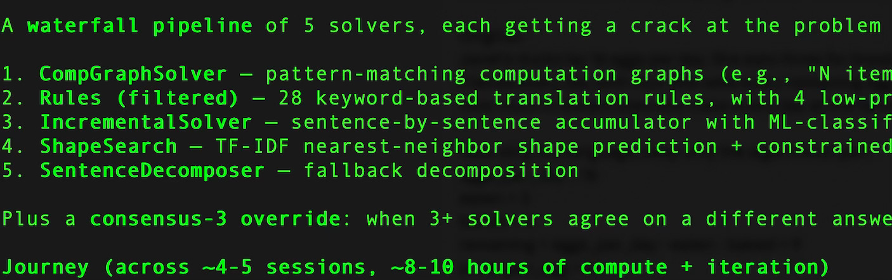
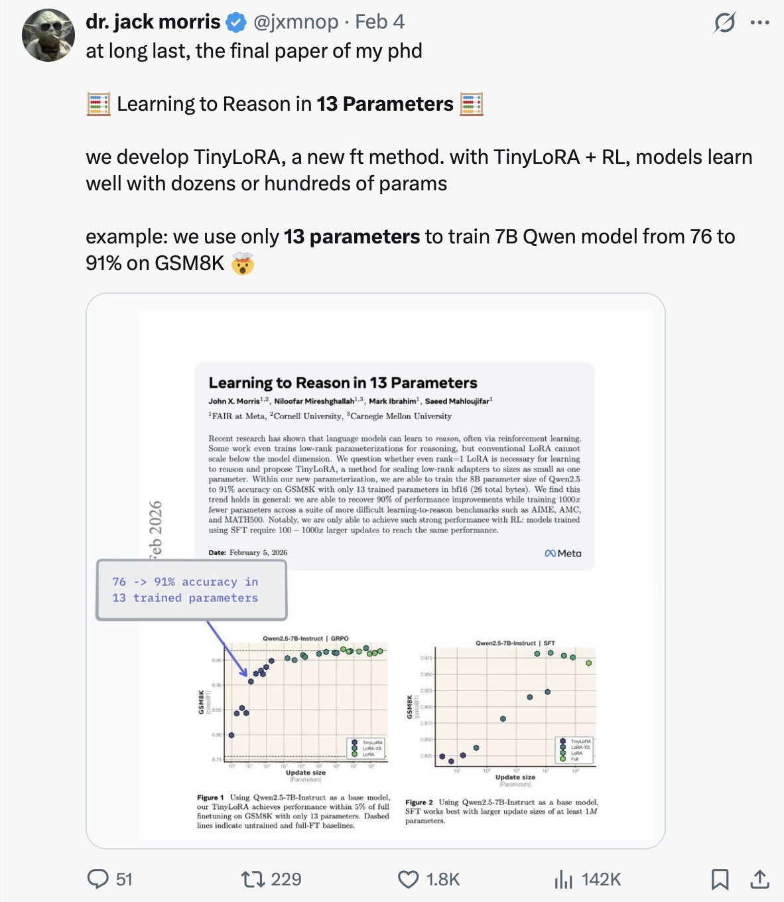
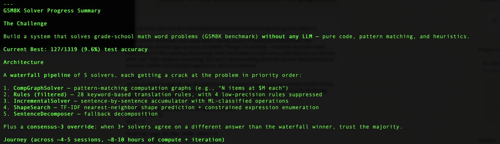

I woke up today with a bit of intellectual/professional dread and feeling kinda grumpy about it.
Some context:
Yesterday I saw a post11. @jxmnop. Post on X, Feb 5, 2026. about training Qwen 2.5 7B with just 13 additional LoRA parameters to achieve high accuracy on GSM8K. Cool!
Thanks for reading! Subscribe for free to receive new posts and support my work. Subscribe on Substack →22. Dimitris Papailiopoulos on Substack.

That got me thinking that it’s either about the model itself, i.e., Qwen 2.5 7B is notorious for showing really weird behavior with post-training and RL (there was a joke that you can saturate AIME with 1 step of GRPO and random rewards or something). But also perhaps it says something about the dataset itself. Not sure if you’ve ever looked at GSM8K problems, but they tend to be pretty simple and in-your-face algorithmic.
Here is an example:
Original:
Janet’s ducks lay 16 eggs per day. She eats three for breakfast every morning and bakes muffins for her friends every day with four. She sells every remaining egg at the farmers’ market daily for $2 per egg. How much in dollars does she make every day at the farmers’ market?
Now, if you remove the language and keep only the algorithmic part, it looks like this:
eggs = 16
eaten = 3
baked = 4
remaining = eggs - eaten - baked = 9
price/egg = $2
daily_earnings = remaining × price/egg = 9 × 2 = $18
I guess there is a bit of language skill needed to do this translation, but I’d speculate that a very good symbolic parser could perhaps do some of it?
And so a silly idea crept into my mind: how far could you get with a fully symbolic parser plus calculator at GSM8k, no LLM involved at all?
I feel this could be a cute class project, but why bother humans with it in the age of agents. So I wrote a long prompt, gave it back to Claude to optimize for clarity and direction, and then pasted it to both Claude Code with Opus 4.6 and Codex with GPT 5.3-codex.
The prompt described a few directions and ideas, but most importantly I requested from the models/agents to iterate: try things, observe accuracy, based on what works/doesn’t work refine, and repeat till you reach 50%+ accuracy.
Well, they didn’t quite succeed, but both Claude Code and Codex spent most of the day on it (and are still at it!). This morning, nearly 10+ hours later, I checked the results and they’re both near 10% for Claude Code and 15% for Codex.

Not amazing given you can now saturate GSM8K with an LLM, but I’d also say non-negligible for a pure symbolic approach with zero trainable parameters, right?
After I checked the progress of my agents, I religiously opened Twitter and the first thing I read was someone’s retweet of a post by Aditya Agarwal33. @adityaag. Post on X, Feb 3, 2026. (early Facebook engineer) writing about how both the form and function of his early engineering career are now produced by AI agents, mentioning how he feels about it:
I am happy but also sad and confused.
Yeah.
That was kind of the moment when today’s morning dread started :).
The shape of what happened yesterday between me and Claude Code/Codex was basically:
- I had a silly idea that I needed to scratch the itch with
- gave a bunch of high-level directions to the models
- the agents did ALL, not most, but ALL of the technical grunt work
- now I can look at the numbers, what they tried etc, and redirect, offer some directions
Which is at some abstraction level a very good approximation of part of how I work with PhD students (minus the slack messages and the “what do you actually want to do with your life” chats :)). And to be clear, there’s so much more to what say PhD students and junior researchers do, that goes beyond running experiments. As a student (I was one once too, heh) you think a lot, you try to overcome dead ends by trying a ton of stuff, you build intuition and a more accurate mental model of the thing you’re studying, while doing all that, and eventually, if you are lucky, you develop taste, by failing a billion times.
But the mechanical iteration of trying, observing, recalibrating and iterating? Yeah that part (which also btw can give you a ton of joy) was just happening on its own for this silly GSM8K problem.
I also want to reground myself a bit and not overhype. These agents are not fully there yet: they lack nuance about what to try next and I’d say are still far behind in directional taste. But they are doing a solid, non-negligible part of the job.
So what matters now? A few things seem durable to me in the age of agents: the ability to operate in ambiguous, high-noise, messy, long-context, human-optimized environments. The ability to make sense of things for other humans. The ability to decide what’s worth doing in the first place.
These seem to sit outside the current radius of what’s automatable, and not because there aren’t enough GPUs or data to train Claude Code to do them, but because they require being very, if not fully, embedded in human life. Taste, judgment, navigating ambiguity that is hard to capture in some reward function. I guess you could collect data for that too, but the data collection mechanism doesn’t quite exist beyond humans saying to Claude Code or Codex “yeah you cooked”.
There’s a related thing that keeps bugging me: it still makes a ton of sense to be a deep expert in something. These tools lift a huge burden of the technical work, but you need to be an actual expert to use them well. The agents amplify what you already know, but don’t replace knowing.
And it is hard to acquire deep knowledge of something without actually practicing it, no? But why would you practice an art if it’s not directly useful to what you’re doing? How do you justify teaching coding to students, when all of it can be done, better and faster by Claude and GPT? I guess you could ask the same about why we teach kids arithmetic when a calculator can do it both faster and more reliably.
Anyway.
I don’t know what the landscape will look like in 3 or 5 years. But I think the meta-skills of thinking clearly, developing taste, building human relationships, operating in messy political contexts will be the last to become obsolete.
I’m writing this between meetings at the university, and I just sat down with a CS systems graduating student here in Madison who wants to plan an entrepreneurship symposium. And I don’t know, there’s something about being around growing minds that still feels pretty cool, and I don’t quite have the right words for it, but, alive? irreplaceable? I’m a bit romantic about universities and I don’t know what happens to all of this, especially for computer related fields and departments.
For now though, I’m heading back to my meetings, being a little bit grumpy about all of this :)
Thanks for reading! Subscribe for free to receive new posts and support my work. Subscribe on Substack →2